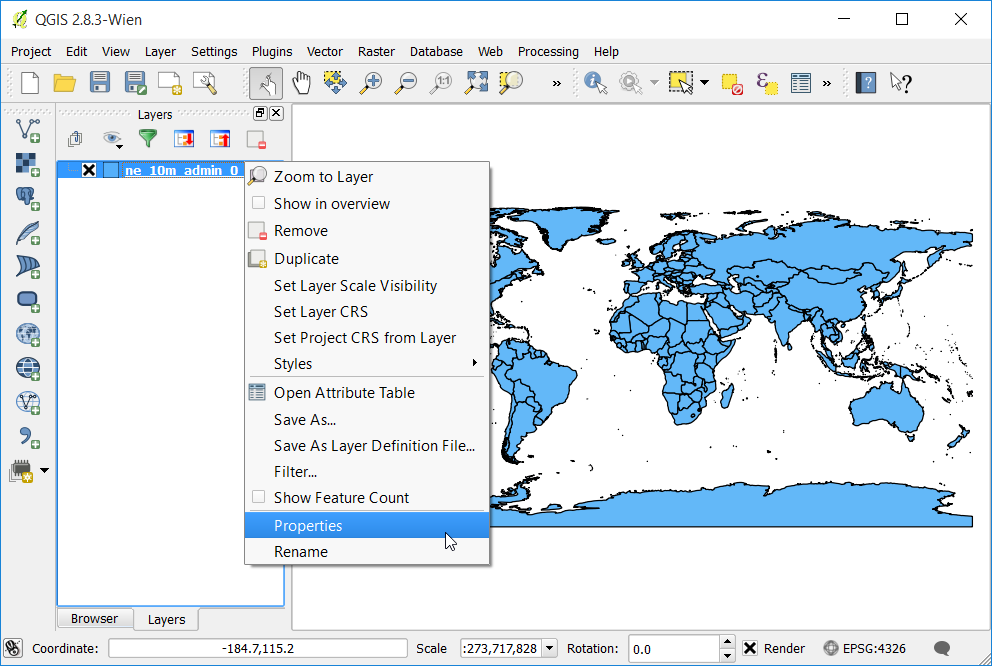
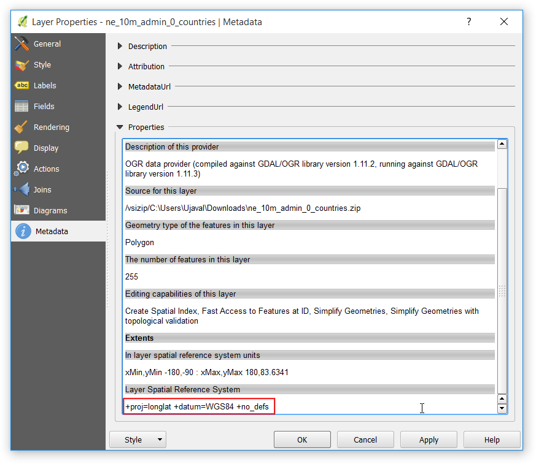
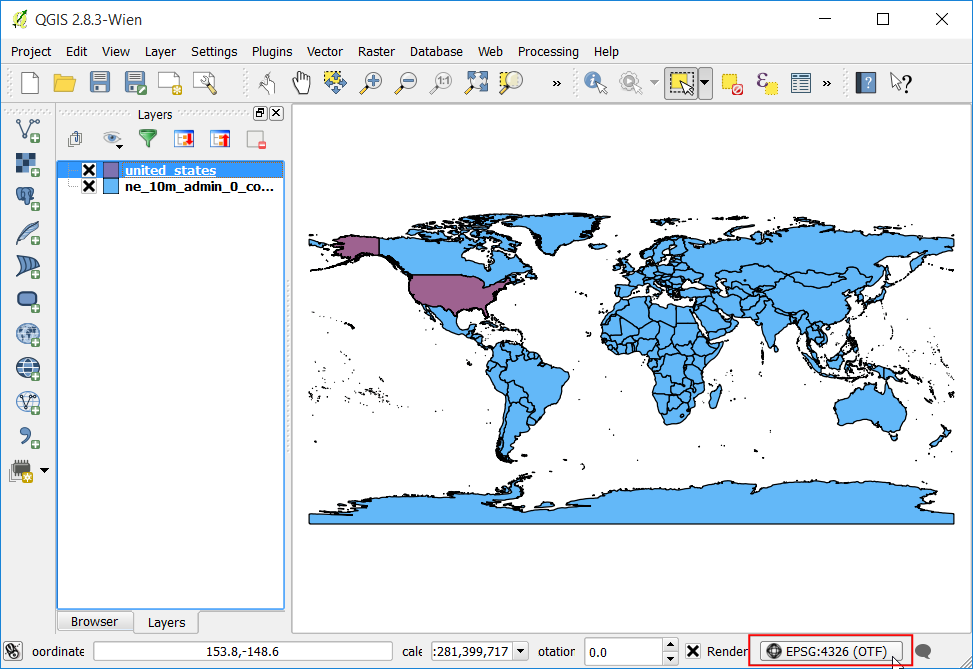
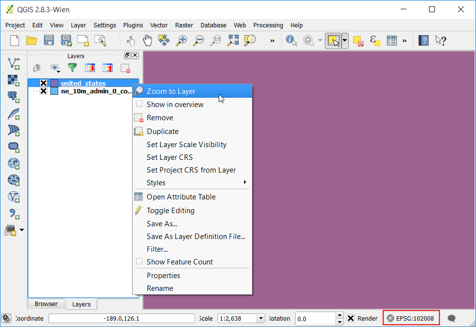
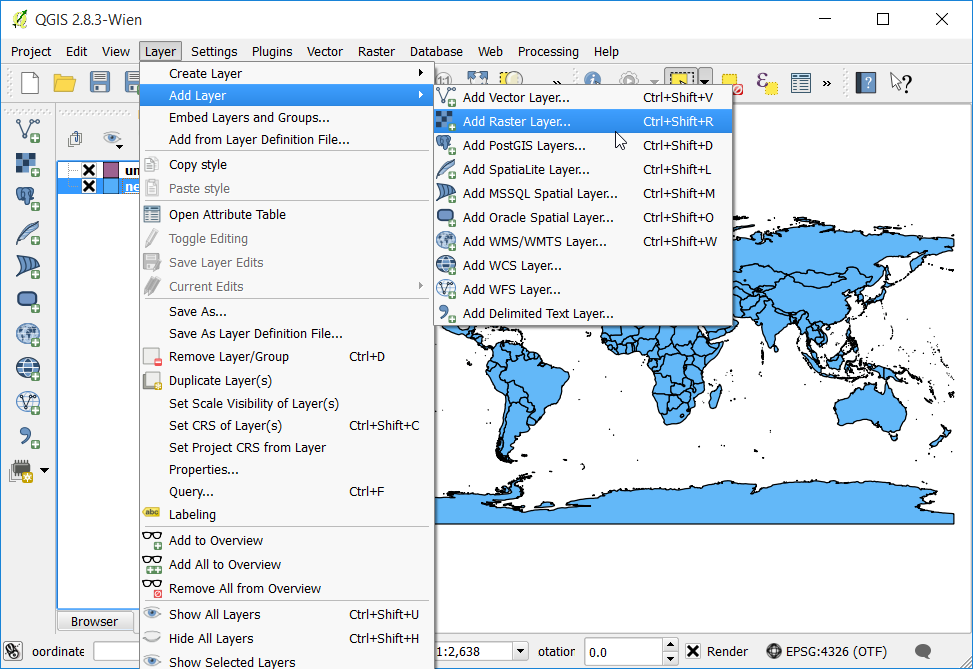

Werken met projecties
Kaartprojecties - of Coördinaten Referentie Systeem (CRS) - veroorzaken vaak veel frustratie bij het werken met gegevens voor GIS. Maar het juiste begrip van de concepten en toegang tot de juiste gereedschappen zullen het veel makkelijker maken met projecties te werken. In deze handleiding zullen we verkennen hoe projecties werken in QGIS en leren over beschikbare gereedschappen voor vector en rasters - in het bijzonder het opnieuw projecteren van vector- en rastergegevens, inschakelen van Gelijktijdige CRS-transformatie en het toewijzen van een projectie aan gegevens zonder projectie.
Overzicht van de taak
De taak is om gegevenslagen van verschillende projecties opnieuw te projecteren en over elkaar te leggen in QGIS.
Andere vaardigheden die u zult leren
.tfw-bestanden gebruiken om raster te voorzien van geoverwijzingen.
Hoe geselecteerde objecten van een laag op te slaan naar een nieuwe laag.
Hoe informatie over metadata weer te geven voor lagen in QGIS.
Procedure
Open QGIS. Ga naar .

Blader naar het gedownloade bestand ne_10m_admin_0_countries.zip en klik op Openen.

Onder in het venster van QGIS zult u het label Coördinaat zien. Wanneer u uw cursor over de kaart beweegt, laat het u de X- en Y-coördinaten van die locatie zien. In de rechter benedenhoek zult u zien EPSG:4326. Dat is de code voor het huidige CRS (projectie) voor het project.

Zoals u later zult zien zou het CRS van het project niet overeen hoeven te komen met het CRS van de laag. We kunnen de metadata bekijken om de projectie van een laag te bepalen. Klik met rechts op de laag ne_10m_admin_0_countries en selecteer Eigenschappen.

Schakel naar de tab Metadata in het dialoogvenster Laageigenschappen. Vergroot het gedeelte Eigenschappen. Onderin, bij Ruimtelijk referentie systeem van kaartlaag, ziet u de definitie voor de projectie. Deze definitie is in de indeling PROJ.4.

Laten we nu eens kijken hoe we de projectie van de laag kunnen veranderen. Deze bewerking wordt Opnieuw projecteren genoemd. In plaats van de gehele laag opnieuw te projecteren, kunnen we ook enkele objecten van de laag opnieuw projecteren. Gebruik het gereedschap Object selecteren en klik op het object van de Verenigde Staten om dat te selecteren.

Klik met rechts op de laag ne_10m_admin_0_countries en selecteer Opslaan als.

Noem, in het dialoogvenster Vectorlaag opslaan als..., de uitvoerlaag united_states.shp. Selecteer ook het vak Alleen geselecteerde objecten opslaan. Dat zal er voor zorgen dat alleen het geselecteerde object opnieuw wordt geprojecteerd en geëxporteerd. Vervolgens kiezen we de nieuwe projectie voor de laag. Klik op de knop CRS selecteren.

Voer, in het dialoogvenster Keuze Coördinaten Referentie Systeem, north america in in het zoekvak Filter. Scroll door de resultaten en selecteer de projectie North_America_Albers_Equal_Area_Conic (EPSG:102008) en klik op OK.
Notitie
We kozen voor de projectie Albers Equal Area Conic voor deze handleiding omdat het een populaire keuze als projectie voor thematische kaarten van de VS is. De keuze van de projectie voor uw eigen gebruik zal afhankelijk zijn van een groot aantal factoren. Bekijk deze gids voor een goed overzicht van projecties.

U zult het nieuwe CRS zien geselecteerd in het dialoogvenster Vectorlaag opslaan als.... Klik op OK.

Als de opnieuw geprojecteerde laag wordt geladen zult u zien dat de nieuwe laag united_states perfect bovenop de laag ne_10m_admin_0_countries valt - zelfs hoewel zij in verschillende projecties staan. Dat komt omdat QGIS een mogelijkheid heeft die is genaamd Gelijktijdige CRS-transformatie gebruiken. De tekst van de projectie aan de rechter onderzijde van QGIS heeft nu het woord OTF naast EPSG:4326` staan. Laten we de optie CRS in QGIS verkennen om er meer over te weten te komen.

Ga naar .

Schakel naar de tab CRS in het dialoogvenster Opties. U zult zien dat de standaard is Automatisch gelijktijdige CRS-transformatie inschakelen als kaartlagen verschillen van CRS. Dit betekent dat wanneer QGIS detecteert dat u lagen met verschillende CRS-en heeft geladen, ze automatisch opnieuw zal projecteren naar een algemeen CRS zodat zij exact met elkaar uitlijnen. Klik op OK.

Laten we de Gelijktijdige CRS-transformatie gebruiken uitschakelen en zien wat er gebeurd. Klik op de tekst Huidig CRS in de rechter benedenhoek.

Deselecteer, in het dialoogvenster Projecteigenschappen, het vak Gelijktijdige CRS-transformatie gebruiken en klik op OK.

Terug in het hoofdvenster van QGIS zult u de nette kaart van de wereld zien verdwijnen. Dat komt omdat het CRS van het project is gewijzigd naar North_America_Albers_Equal_Area_Conic en de coördinaten en schaal zijn nu anders. Klik met rechts op de laag united_states en selecteer Op kaartlaag inzoomen.

Nu zult u de Verenigde Staten in de geselecteerde projectie zien. Merk op dat de objecten van ne_10m_admin_0_countries niet verschijnen in het kaartvenster omdat zij in een andere coördinatenruimte staan dan de laag united_states. Ga terug naar het dialoogvenster Projecteigenschappen en schakel de optie Gelijktijdige CRS-transformatie gebruiken weer in voor de rest van de handleiding.

Laten we nu eens schakelen en een rasterlaag aan het project toevoegen. Blader naar de map waar u het bestand minisc_gb.zip heeft opgeslagen. Lokaliseer de map RGB_TIF_COMPRESSED die de tif-bestanden bevat. U zult zien dat de .tif-afbeeldingsbestanden kale TIF-bestanden zijn, geen GeoTIFF-bestanden. Dat betekent dat zij geen enkele informatie over de projectie bevatten. U dient ze te voorzien van geoverwijzingen om deze afbeeldingen in een GIS te kunnen gebruiken. Een geoverwijzing bevat 2 typen informatie - bereik van de afbeelding en de projectie. Gewoonlijk worden de bereiken opgeslagen in een bestand dat bekend staat als World file en zij hebben extensies als .tfw of .jgw. De meeste GIS-software, inclusief QGIS, zouden in staat moeten zijn de in de worldbestanden opgeslagen informatie te gebruiken zolang als zij zijn opgeslagen in dezelfde map als de originele afbeelding en dezelfde naam heeft. De bestanden .tfw voor rasterbestanden van MiniScale staan in een afzonderlijke map, genaamd georeferencing_files.

Ga naar de map ESRI_TFW_FILES in georeferencing_files. De bestanden .tfw zijn bestanden met platte tekst. Open een van de bestanden .tfw in een tekstbewerker.

De worldbestanden bevatten 6 regels met enkele getallen. Zoals hieornder vermeld behelst elk bestand enige informatie over het rasterbestand. Kennen van deze indeling is nuttig omdat sommige gegevens geen worldbestanden hebben en dan moet u deze hand,matig maken met behulp van de verschafte informatie.
Line 1: A: pixel size in the x-direction in map units/pixel
Line 2: D: rotation about y-axis
Line 3: B: rotation about x-axis
Line 4: E: pixel size in the y-direction in map units
Line 5: C: x-coordinate of the center of the upper left pixel
Line 6: F: y-coordinate of the center of the upper left pixel

Kopieer het bestand MiniScale_(standard)_R17.tfw van de map georeferencing_files naar de map RGB_TIF_COMPRESSED. Op deze manier staan de bestanden .tfw en .tif in dezelfde map en kan QGIS de informatie gebruiken.

Ga, in het hoofdvenster van QGIS, naar . Blader naar het bestand MiniScale_(standard)_R17.tif en klik op Open.

De bestanden van de Ordnance Survey staan in de projectie British National Grid. Zoek, in het dialoogvenster Keuze Coördinaten Referentie Systeem, naar british national en selecteer het CRS OSGB 1936 / British National Grid (EPSG:27700). Klik op OK.

Als de laag MiniScale_(standard)_R17 eenmaal is geladen, klik er dan met rechts op en selecteer Op kaartlaag inzoomen.

U zult zien dat de rasterlaag bovenop de vectorlaag ne_10m_admin_0_countries ligt. Omdat we de OTF hebben ingeschakeld met EPSG:4326, wordt de laag MiniScale_(standard)_R17 dynamisch opnieuw geprojecteerd naar EPSG:4326 en weergegeven in dezelfde coördinatenruimte als de andere laag.